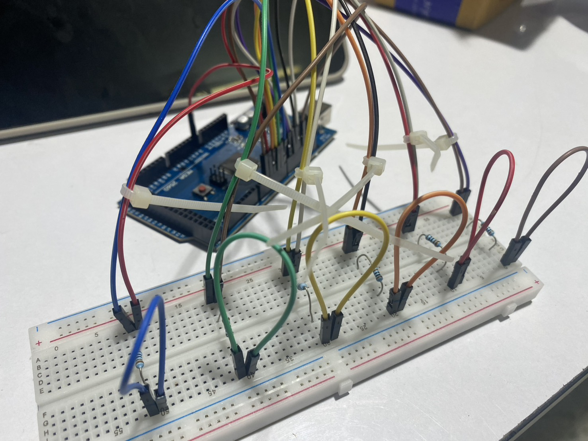
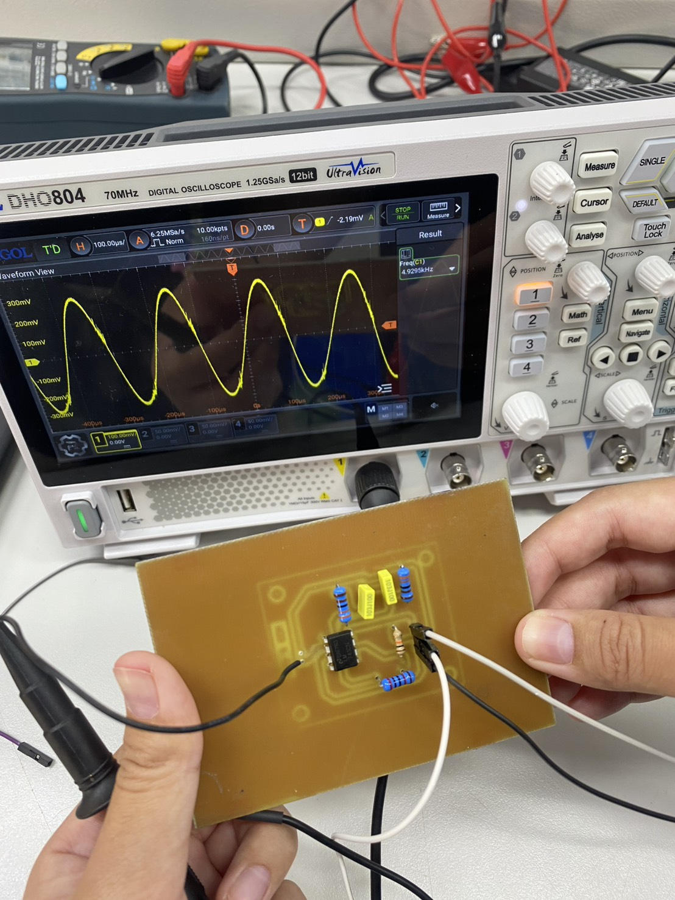
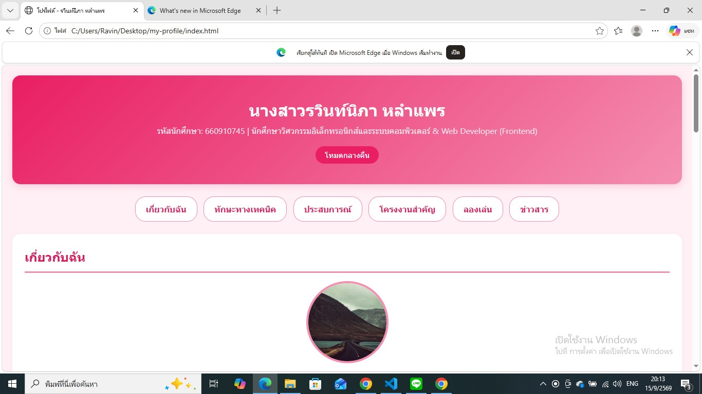

Industrial IoT & Automation System
โปรเจกต์พัฒนาระบบมอนิเตอร์และควบคุมสำหรับงานอุตสาหกรรม ระหว่างการฝึกงานที่ Delta Electronics โดยใช้ Arduino ร่วมกับเซ็นเซอร์อุตสาหกรรม
- Arduino
- IoT Sensors
- C/C++
โปรเจกต์ด้านวิศวกรรมไฟฟ้า การเขียนโปรแกรม และเว็บไซต์

โปรเจกต์พัฒนาระบบมอนิเตอร์และควบคุมสำหรับงานอุตสาหกรรม ระหว่างการฝึกงานที่ Delta Electronics โดยใช้ Arduino ร่วมกับเซ็นเซอร์อุตสาหกรรม

คำนวณ ออกแบบ และจำลองการทำงานของวงจรกำเนิดสัญญาณความถี่และวงจรขยายด้วย Op-Amp พร้อมออกแบบแผ่นปริ้นต์ (PCB)

พัฒนาเว็บไซต์เรซูเม่และรวบรวมผลงานการศึกษา 4 หน้าแบบ Responsive รองรับการแสดงผลทุกอุปกรณ์ นำขึ้นออนไลน์ผ่าน GitHub Pages